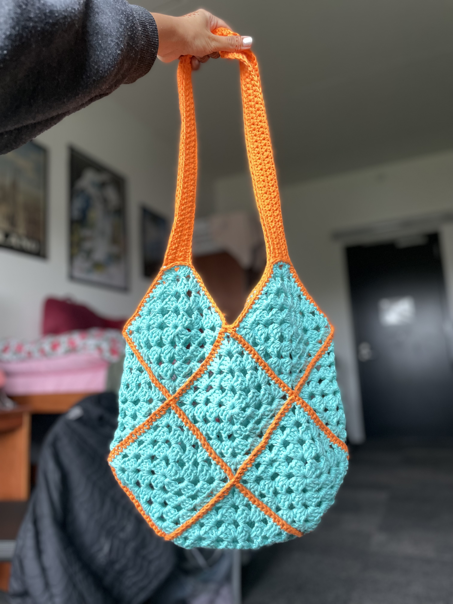
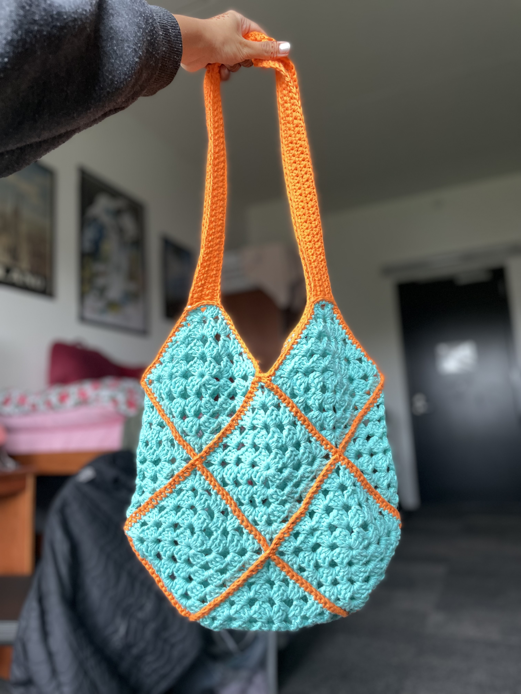

Crochet is the most recent art form I've taken up; I started this year over winter break in 2022. My first project was a granny square tote bag made of spare yarn that I found in the back of a drawer and plastic hooks from Walmart. The second half of winter break was stressful, so crochet served as a stress reliever during the month that I was home. My first memories of crocheting are at odd hours of the morning, listening to my mom, who was in India, tell my dad about the happenings of our extended family. The first project involved a lot of trial and error; I remade parts of the bag multiple times because I would discover or think of a better way to do it every time. I started off by following a YouTube video to teach me the basic crochet stitches. I practiced those for a bit, and I started with the bag when I got bored. While that first bag isn’t perfect, I love using it and seeing it as a reminder of where I started.
I’ve improved a lot in a short amount of time. A lot of crochet projects use similar techniques in slightly different ways. As a result, there hasn’t been a large learning curve, and many of the techniques I used for that first tote bag are still techniques I use in my projects now. The improvement comes in how well I do those techniques. As I crochet more, my stitches become more uniform, I can hide my knots better, and I’m faster. As a result, my later projects look more clean and professional than my first ones by leaps and bounds. I love crochet because of how portable it is. It's so easy to just drop a ball of yarn and a hook in a bag and be on my way. I’ve crocheted in many different places and never had an issue doing so. Following the first bag, I've made two market bags and a winter scarf, with a cardigan in progress. I love how the final products are so versatile and useful; that love has motivated me to continue through the repetitive process of making a piece.